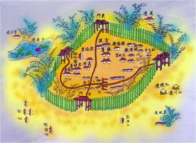
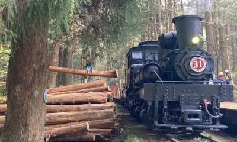
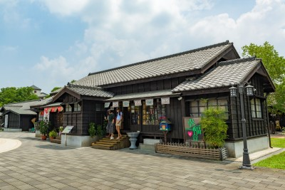

| 早期發展與諸羅時期 | |
在漢人尚未進入之前，嘉義地區主要由平埔族原住民居住，其中以洪雅族為主，過著農耕與狩獵的生活。17世紀後，隨著漢人逐漸移入開墾，嘉義開始形成聚落。到了清朝時期，此地被稱為「諸羅」，並設立諸羅城，成為台灣中南部的重要行政與軍事中心。後來因居民在動亂中展現團結與勇氣，清廷將「諸羅」改名為「嘉義」，意為表彰其忠義精神。 |
 |
| 資料來源：嘉義市政府全球資訊網 | |
| 日治時期的現代化建設 | |
1895年後，日本開始統治台灣，嘉義進入快速現代化階段。政府興建鐵路、道路與各類公共設施，使交通與城市發展大幅提升。同時，嘉義因鄰近山區資源豐富，特別發展阿里山林業，建立完整的森林開採與運輸系統，包括著名的森林鐵路。這段時期不僅奠定了嘉義的經濟基礎，也讓城市逐漸具備現代化樣貌。 |
 |
| 資料來源：嘉義市政府全球資訊網 | |
| 戰後發展與觀光轉型 | |
第二次世界大戰後，嘉義回歸中華民國統治，逐漸從林業與農業城市轉型。隨著經濟成長與交通改善，嘉義在農業生產之外，也積極發展觀光產業。由於地理位置接近山區，嘉義成為通往阿里山的重要門戶。今日的嘉義融合歷史文化、自然景觀與地方特色，展現出兼具傳統與現代的城市風貌。 |
 |
| 資料來源：嘉義市政府全球資訊網 | |